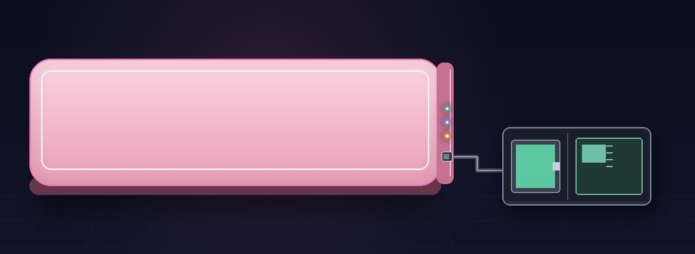
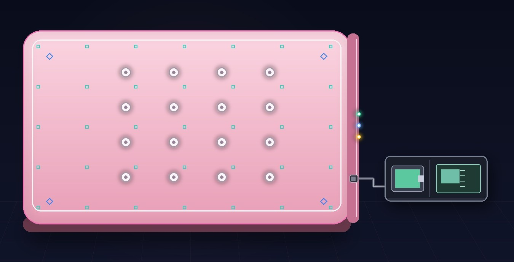

无法表达
膀胱与直肠充盈是内部感受，婴幼儿既不能说，也无法主动示意，看护者只能靠猜。
一张薄薄的枕垫，提前一分钟读懂宝宝
宝宝不需要穿戴任何东西。躺下的那一刻，枕垫开始读取皮层电活动、压力与微环境， 端侧 AI 在排便或排尿发生前 60–120 秒提醒看护者—— 把“随时待命”的不确定等待，变成可以计划的 60 秒。

端侧推理 · 无需联网 断网仍可预警8 mm 超薄枕垫 · 樱花粉 · 外置电池 + SOM 模组经柔性连线接入右端侧面（示意图）
01 · 机会｜痛点
膀胱与直肠充盈是内部感受，婴幼儿既不能说，也无法主动示意。现有产品只在“已经发生”之后报警， 而看护者真正被消耗的，是全天候无法离开的注意力。
膀胱与直肠充盈是内部感受，婴幼儿既不能说，也无法主动示意，看护者只能靠猜。
现有尿湿产品只能在“已经发生”后报警，皮肤与尿液接触常常已 10–30 分钟。
日均 10–20 次排尿、每次更换 5–10 分钟；夜间频繁起床，家长长期“随时待命”。
传统尿不湿产品错过如厕训练的“准备性信号”，孩子自主如厕建立变慢，亲子焦虑增加。 从低月龄建立“姿势—排便”的映射习惯，形成能走路后就有自主如厕的意识。
托育机构按 1:3–1:5 配比照护，频繁更换占用大量人工，护理难以标准化。
一句话总结
所有现有方案，
都在回答“尿了吗？”
家长真正想问的是
“什么时候要拉？”
真正的痛点不是“换得累”，而是“不知道下一次什么时候来”——整段时间都不敢离开。
口径：典型 6–24 月龄家庭，内部访谈整理。
02 · 产品｜形态
它首先是一张好睡的枕头：300 × 240 × 8 mm、320 g，替换现有婴儿枕即可升级； 其次才是一台贴身的感知设备——宝宝不需要戴任何东西，也不用改变睡姿。

① 柔性干电极阵列
16 触点，居中均匀分布。后枕与颈侧自然贴合中部阵列，采集皮层电活动。
电池与 SOM 模组为外置件，经柔性连线接入右端侧面（LED 旁），不放入垫内—— 既降低垫体厚度与发热，也让外套可以整件拆洗。
形态即渠道：枕垫是母婴店、月子中心、托育机构的标配品类，替换现有婴儿枕即可升级，不需要教育用户接受一种全新的穿戴设备。
03 · 产品｜结构
从上到下五层，各司其职。亲肤层负责“愿意躺”，电极层负责“读得到”，压力与温湿度层负责“读得准”， 柔性电路负责“送得出”，防滑底衬负责“不移位”。
亲肤、透气、可拆洗；外套独立，脏了直接换新，不必整机返厂。
16 触点居中均匀分布，对应后枕与颈侧，贴合稳定、不需要导电膏。
压力全覆盖 35 点；温湿度 4 点，只做微环境与漂移补偿，不感知排泄物。
右端侧面接口 + 3 颗 1.5 mm LED，正面无光；走线随垫体弯折。
透气网布，躺卧翻身也能保持位置，整垫厚度压到 8 mm。
04 · 使用｜流程
整条链路在本地完成：采集、处理、推理、决策都在随附模组里发生。 没有“先上传云端再等结果”，也不需要网络。
STEP 1
后枕与颈侧自然贴合中部电极阵列，采集皮层电活动；压力层覆盖整垫，感知在垫、体动与呼吸。
零穿戴 · 无需调整睡姿
STEP 2
低功耗 SoC 本地完成信号处理与神经网络推理，不需要联网。
端侧推理 · 无需联网 · 全链路本地
STEP 3
预测到即将排便或排尿，提前 60–120 秒通过 App、床头灯或音箱提醒看护者。
提前 60–120 s · 连续两窗确认
膀胱与直肠充盈是“斜坡式”累积过程，事件发生前数十秒，皮层状态已出现可解码的变化—— 我们读的不是尿裤，而是大脑给出的早期信号。
替换现有婴儿枕，厚度与手感接近普通枕头，开箱即用。
第 0 天
首次开机自动配对手机，完成自适应，无需任何设置。
第 2 天
自然作息下连续记录，形成节律画像，不改变带娃习惯。
第 2 周
提前 60–120 秒提醒，留出抱起与准备时间；同步评估如厕准备度。
第 1 月
排尿 / 排便节律与如厕准备度评分，模型随月龄升级。
持续
低打扰是设计底线：只在“高置信 + 连续两窗”时提醒，并设 5 分钟不应期；非预测窗口保持安静。 对看护者而言，产品价值不是“更多提醒”，而是“更少焦虑”。所有提醒均可分级：提示音 / 轻震 / 床头灯颜色，家长可按家庭习惯选择。
05 · 技术｜链路
六段链路全部落在随附模组内。电生理负责“预测”，压力负责“门控”，温湿度负责“补偿”—— 三路信号由同一时钟打时间戳，偏差小于 1 ms。
01
16 触点 后枕 / 颈侧
02
0.5–45 Hz 250 Hz 采样 · 24 位
03
重采样 50 Hz 50 Hz 工频抑制
04
本地 SoC 无需联网
05
连续两窗 5 min 不应期
06
App / 灯光 语音 / 轻震
电生理负责“预测”；压力负责“在垫 / 体动 / 呼吸”门控；温湿度只做微环境与漂移补偿——不感知排泄物。
三路信号由同一时钟打时间戳，偏差小于 1 ms，保证“事件前 60–120 秒”的标注准确。
外置电池 + SOM 模组经柔性连线接入右端侧面；采集、处理、推理在随附模组内完成，断网仍可预警。
06 · 实测｜数据
这份数据的价值不在“多”，而在“真”：自然情境下的连续记录，让“事件前 60–120 秒”的标注成为可能， 也让模型学到的不是实验室里的理想信号。
| 项目 | 规模与口径 |
|---|---|
| 受试者 | 60 名 6–24 月龄健康婴幼儿（男 34 / 女 26） |
| 记录规模 | 每人 3 次 × 约 4 小时自然情境记录：720.0 h 原始，648.7 h 可用（剔除 9.9%） |
| 事件真值 | 659 次排泄意图表达（546 排尿 + 113 排便），验证阶段用尿裤传感贴片 + 视频 + 日志三对照 |
| 评测方式 | 婴幼儿独立五折交叉验证（每折 12 名），测试集 1:1:1 均衡，随机种子固定 |
| 同步精度 | 三路信号由同一时钟打时间戳，偏差 <1 ms；传感器与视频一致性 ±0.9 s |
所有指标均来自婴幼儿独立五折验证，经多重比较校正后仍然显著（p<0.05）。 以上为实验室与自然情境试验数据，量产后将持续用真实用户数据迭代模型。
07 · 信任｜安全
无创、无辐射、低亮、本地处理——这些不是加分项，而是能不能给宝宝用的前提。
柔性电极只做体表电信号采集，不使用任何辐射源；单次功耗毫瓦级。
外套为 A 类婴幼儿纺织品，可拆下水洗；电子层独立密封。
3 颗 1.5 mm LED 与连接口位于 8 mm 右端侧面，正面无光；夜间只在预警时轻闪。
原始信号在垫内处理，不上传云端；云端只接收脱敏统计。
可随时关闭提醒与灯光、删除数据；身份信息与数据分离存储。
一句话
孩子的数据，
只用来让下一次提醒更准。
以“非医疗健康电子产品”先行上市，同步启动儿童健康类产品的注册检验与临床评价评估； 公司已有医疗器械相关流程经验，注册路径可直接复用。
本产品定位为非医疗健康电子产品，不用于疾病的诊断、治疗或监护替代；异常情况请遵医嘱。
08 · 商业｜模型
硬件是一次性入口，外套是“洗坏了就换”的自然复购，成长报告是家长愿意持续付费的内容， 机构授权则带来批量交付与口碑扩散。
枕垫 + 2 只可换洗外套 + 充电座
999 元
建议零售价
毛利 ~55%外套可拆洗，建议 6 个月换新
129 元/只
年 2 只
毛利 ~60%成长报告、多孩档案、远程共享
29 元/月
199 元 / 年
毛利 ~85%托育机构按班级 / 床位年费
1.2 万元/年起
机构端年费
毛利 ~80%| 项目 | 金额 |
|---|---|
| 硬件收入 | 999 元 |
| 耗材（年 2 只外套） | 258 元 |
| 订阅（12 个月） | 199 元 |
| 首年 LTV | 约 1,456 元 |
| 获客成本 CAC（目标） | ≤ 450 元 |
推广打法：机构做“信任背书”（托育机构、儿保医生示范），家庭做“内容种草”（真实使用日记、睡眠改善对比）， 电商做“承接转化”（旗舰店 + 直播间）；三端同价，避免渠道冲突。
核心算法与结构已完成验证；母公司已有智能康养设备的量产体系与质量流程， 头垫类产品可直接复用产线、供应商与质量流程。
M1
枕垫打样与可靠性测试完成
M2
3 家托育机构 + 500 户内测
M3
首批 1 万台量产交付
M4
注册检验与临床评价启动
定价为市场测试建议值，正式定价将基于 500 户内测的价格敏感度测试调整；毛利为估算值。
09 · 政策｜价值
生育支持带来“愿生”，普惠托育带来“敢托”，AI + 民生带来“能用技术解决”—— 产品所在的方向，正好是政策与需求同频的位置。
《关于优化生育政策促进人口长期均衡发展的决定》明确三孩政策与配套支持措施； 国家育儿补贴制度落地，家庭育儿支出获得直接支持。
国务院推动普惠托育服务专项行动，托育机构数量与备案率持续提升， 机构端对“标准化护理工具”的需求快速上升。
2025 年 8 月国务院《关于深入实施“人工智能+”行动的意见》部署“人工智能 + 民生福祉”， 鼓励 AI 在育儿、养老等场景落地。
《“健康中国 2030”规划纲要》《健康儿童行动提升计划》把儿童早期发展与常见病预防作为重点任务。
云峰智能已具备科技中小企业资质，并已与安徽理工大学、国家超算（济南）中心、科大讯飞签署长期合作协议—— 可复用这些资质与合作通道申报项目与补贴。
及时更换显著降低尿液与皮肤接触时间，减少尿布皮炎与红臀发生率。
减少夜间反复检查与更换，家长与宝宝的睡眠连续性都能提升。
把“凭经验照护”变成“按数据照护”，机构可标准化排班与交接。
降低育儿焦虑与照护成本，是“生育支持政策”落到家庭的一个具体抓手。
我们不是在做一件“更聪明的尿裤”，而是在把“照顾宝宝”从被动响应变成可计划的看护—— 这既是家庭愿意付费的价值，也是政策愿意支持的方向。
注：政策表述以公开发布文件为准，具体条款与补贴标准请以最新官方口径核对。
10 · 公司｜实力
母公司蔼床产品已开始批量交付；算法、硬件、供应链与质量流程都经过量产级验证， 可直接复用到枕垫产品线。
200G 成年人排便意图试验真人数据集，同路径迁移试验代价大幅降低。
事件级灵敏度 91.8%；个体化微调可到 94.7%，形成“越用越懂你家宝宝”的体验。
母公司已具备智能康养设备量产体系，枕垫类产品可直接复用产线、供应商与质量流程。
母公司拥有 7 项专利 + 1 项软著，核心发明专利已通过初审；可参与行业标准与白皮书编制。
淮南市科技中小企业，专注智能康养设备的研发与生产。已推出 蔼床® 护理用床形机器人； AI 算法底座已在护理机器人上完成量产级验证。
不是某一项技术，而是“真实事件数据 + 可量产结构 + 家庭场景渠道”的叠加。
下一步加固：申请枕垫结构与贴合方式专利；与托育机构共建婴幼儿护理数据联盟； 把“事件级灵敏度 / 虚警率”写入行业标准建议稿，抢占定义权。
11 · 常见问题
以下回答整理自产品说明与试验记录，具体体验以实际产品为准。
便前宝是一张 8 mm 厚的智能枕垫：宝宝躺下后，它同时读取脑电、压力与温湿度，由端侧 AI 判断“是否即将排便 / 排尿”，并在事件发生前 60–120 秒提醒看护者。
普通尿湿报警器是在“已经尿了”之后才响；便前宝回答的是“什么时候要拉”，把事后补救变成事前准备。
不需要。零穿戴、无贴片、无需导电膏，也不改变宝宝的睡眠姿势。后枕与颈侧在躺卧时自然贴合中部电极阵列，压力层则覆盖整张垫子。
厚度 8 mm、重量 320 g，手感和厚度接近普通婴儿枕，替换现有枕头即可使用。
不需要联网。采集、处理、推理都在随附的 SOM 模组内完成，断网仍可预警。
原始信号不上传云端，云端只接收脱敏统计；身份信息与数据分离存储，家长可随时关闭提醒、删除数据。
来自 60 名 6–24 月龄婴幼儿、648.7 小时自然情境记录与 659 次事件真值；采用婴幼儿独立五折交叉验证（每折 12 名），测试集 1:1:1 均衡。
事件真值用尿裤传感贴片 + 视频 + 日志三路对照，三路信号同一时钟打时间戳，偏差小于 1 ms。所有指标经多重比较校正后仍然显著（p<0.05）。
不会。3 颗 1.5 mm LED 位于 8 mm 右端侧面，正面无光，夜间只在预警时轻闪；提醒可分级为提示音、轻震或床头灯颜色。
系统只在“高置信 + 连续两窗”时提醒，并设 5 分钟不应期，非预测窗口保持安静。
不是。便前宝定位为非医疗健康电子产品，不用于疾病的诊断、治疗或监护替代，也不能替代成人看护。
公司同步启动儿童健康类产品的注册检验与临床评价评估；如宝宝出现异常，请及时就医。
试验覆盖 6–24 月龄健康婴幼儿；产品按自然作息连续记录，不改变原有带娃习惯。
电池供电可连续运行 2.5 小时以上，外接电源可长时使用；续航数据来自验证样机，量产版本将持续优化。
12 · 联系｜体验
产品打样、托育机构试点、渠道合作与投资洽谈，欢迎直接联系。 我们尤其希望听到真实家庭的使用反馈——那会决定下一个版本长什么样。